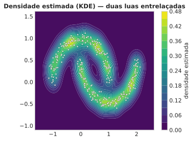
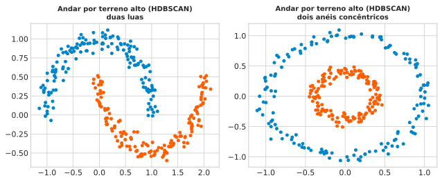
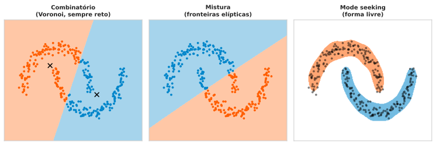
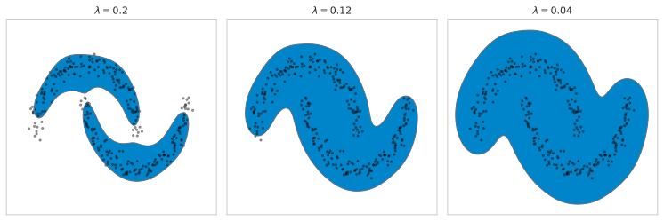
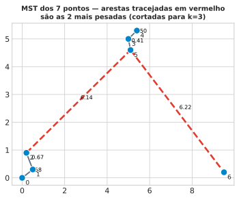
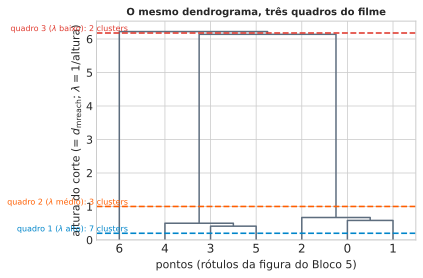
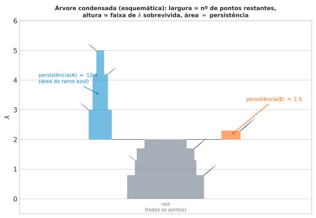
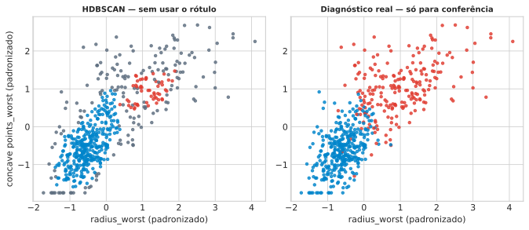

Aula 3: Topografia de Densidade e Grafos — Clustering Hierárquico e HDBSCAN
Aprendizado Não Supervisionado
1 Revisão e Introdução
1.1 Revisão Rápida: Da Aula 1 à Aula 2, e a Limitação Que Ficou Pendente
A Aula 1 assumiu uma forma paramétrica fixa para a densidade \(p(\mathbf{x})\) (uma gaussiana, por exemplo). A Aula 2 abandonou essa forma fixa: a partir do mesmo estimador geral \(p(\mathbf{x})=K/(NV)\), fixar \(K\) e deixar \(V\) crescer até capturar \(K\) vizinhos dá o \(k\)-NN (com a distância ao \(K\)-ésimo vizinho, \(d_K(\mathbf{x})\), como subproduto); fixar \(V\) e contar quantos pontos caem dentro dá a Janela de Parzen, suavizada com kernel gaussiano na KDE. Nenhum dos dois métodos escapou de duas limitações, porém: sem uma forma paramétrica para “resumir” os dados em poucos parâmetros, os dados são o modelo (toda consulta nova revisita o conjunto de treino inteiro), e ambos sofrem a maldição da dimensionalidade — em dimensão alta, o volume se concentra numa casca fina e as distâncias perdem poder de discriminação, um problema que volta a aparecer no bloco final desta aula, quando os \(30\) atributos originais do Breast Cancer Wisconsin (não só os \(2\) usados nas figuras) entram em jogo.
O resultado desses métodos, para qualquer conjunto de dados, é uma paisagem \(p(\mathbf{x})\) com picos (regiões densas) e vales (regiões raras) — essa paisagem, sozinha, já responde “esse valor de \(\mathbf{x}\) é comum ou raro?” ponto a ponto. A própria Aula 2 já apontou para onde isso ia: fechou com uma “Ponte para a Aula 3” avisando que \(d_K(\mathbf{x})\), ali uma ferramenta de estimação de densidade, seria reaproveitada como uma métrica de densidade local para construir caminhos num grafo — é exatamente esse reaproveitamento que esta aula cumpre.
1.2 Ideia Central
Só que “comum ou raro” não é a única pergunta que interessa. Dado um conjunto de pacientes, uma pergunta diferente — e ainda sem resposta — é: quais pacientes são parecidos o bastante entre si para merecer o mesmo rótulo? Saber que um ponto está numa região densa não diz, sozinho, com quais outros pontos ele forma um grupo: duas regiões densas separadas por um vale de baixa densidade são dois grupos diferentes, mas dois pontos dentro da mesma região densa e contígua — mesmo geometricamente distantes um do outro — deveriam contar como um único grupo. “Comum ou raro” é uma propriedade de um ponto isolado; “parecido com quem” é uma propriedade de conjuntos de pontos. Essa segunda pergunta é clustering — o objeto desta aula: transformar a mesma paisagem de densidade que a Aula 2 já sabe estimar numa partição de grupos, sem que ninguém diga de antemão quantos grupos existem, nem que forma cada um tem.
1.3 Roteiro da Aula
A pergunta que fecha o Organizador Prévio — transformar uma paisagem de densidade numa partição de grupos — se desdobra em quatro perguntas mais específicas, cada uma resolvida em um bloco desta aula:
- Densidade sozinha não define grupo — o que exatamente deveria significar “cluster”?
- Dada essa definição, como construir um cluster computacionalmente, sem escolher quantos grupos existem de antemão?
- Isso pode ser reduzido a um problema de grafos — e, se sim, qual estrutura de grafo captura toda a hierarquia de clusters possível de uma só vez?
- Uma vez com essa estrutura, como decidir quais clusters encontrados são estrutura real dos dados, e quais são só flutuação amostral?
1.4 Problema Motivador
Antes de resolver nada, olhe a paisagem de densidade de frente: a figura abaixo é a mesma ferramenta da Aula 2 — KDE — aplicada a um conjunto de pontos sintético e controlado, em forma de duas luas entrelaçadas, escolhido especificamente porque nenhuma suposição de “bola em torno de um centro” o respeitaria.
A paisagem mostra exatamente duas cristas conectadas, cada uma acompanhando o formato de uma lua, separadas por um vale visível de baixa densidade — apesar de as duas luas se entrelaçarem geometricamente (a ponta de uma passa perto do meio da outra). Isso já é informação nova, que a Aula 2 sozinha nunca perguntou: a Aula 2 calculava \(p(\mathbf{x})\) para qualquer ponto individual do plano, mas nunca perguntava “quantas cristas separadas existem nessa paisagem, e onde termina uma e começa a outra?” — essa é uma pergunta sobre a conectividade do terreno alto, não sobre o valor da densidade em nenhum ponto isolado. Repare também que a resposta óbvia a olho nu (duas cristas) não tem nada a ver com “estar perto de um centro geométrico fixo”: as duas pontas de cada lua estão, em linha reta, tão longe uma da outra quanto de pontos da lua vizinha — o que as une é a crista de densidade alta que as conecta, não a proximidade a um ponto central.
1.5 Pergunta
DicaA paisagem de densidade acima parece ter, a olho nu, duas cristas separadas por um vale. Isso já resolve sozinho o problema de encontrar os grupos, ou falta alguma coisa?
Dica: pense se “ter uma paisagem de densidade” é a mesma coisa que “ter uma lista de quais pontos pertencem a qual grupo” — e o que teria que acontecer, algoritmicamente, para ir de um para o outro.
- □ Basta calcular \(p(\mathbf{x})\) em cada ponto do dataset e aplicar um limiar fixo \(\lambda\): os pontos acima do limiar já vêm automaticamente rotulados por grupo, sem nenhum passo adicional.
- □ Se toda a paisagem de densidade fosse uma única crista, sem nenhum vale separando regiões, não existiria estrutura de cluster genuína a recuperar — qualquer partição imposta sobre ela seria arbitrária.
- □ Já que a Aula 2 responde “esse ponto é comum ou raro?” para cada ponto isolado, basta ordenar os pacientes por densidade estimada e cortar a lista ao meio para obter os dois grupos verdadeiros, em qualquer dataset com exatamente dois grupos.
- □ Numa aplicação de detecção de fraude com dois golpes bem distintos, cada um formando sua própria concentração no espaço de atributos, a mesma lógica de “componente conectada de uma região de alta densidade” se aplicaria para separar os dois tipos de fraude entre si, mesmo sem nunca ter visto o rótulo do tipo de golpe.
2 Intuição — Vales e Montanhas
Antes de qualquer formalismo, veja o resultado inteiro primeiro — só vai faltar nomear os passos. Pense na densidade \(p(\mathbf{x})\) dos dados como uma paisagem: regiões densas são montanhas, regiões raras são vales. A aposta desta aula é que um cluster é uma montanha inteira — não importa o formato do contorno da montanha na base, só importa que ela seja um bloco conectado de terreno alto, separado das outras montanhas por um vale (uma região de baixa densidade).
Um algoritmo que respeita essa definição não precisa de centróide nenhum: em vez de “para qual centro fixo eu estou mais perto”, ele pergunta “caminhando sempre por terreno alto, até onde eu consigo chegar sem descer a um vale?”. Cada lua inteira, mesmo curva, é terreno alto conectado de ponta a ponta — não importa que as duas pontas da lua estejam geometricamente longe uma da outra em linha reta, porque a trilha entre elas nunca desce a um vale.
Essa escolha não é só estética. Qualquer regra que particione o espaço atribuindo cada ponto ao centro fixo mais próximo, dentre um pequeno conjunto de protótipos, sempre corta o espaço em regiões convexas — a região de cada protótipo é a interseção dos semiespaços “mais perto deste protótipo do que de qualquer outro”, e toda interseção de semiespaços é convexa. Isso significa que nenhuma escolha de protótipos, por mais que se aumente a quantidade deles, recupera uma lua ou um anel como um cluster único: a fronteira entre dois protótipos vizinhos é sempre reta (ou, em mais dimensões, um hiperplano), e uma reta não acompanha uma curva fechada. A definição por conectividade de terreno alto não tem essa restrição de forma nenhuma.

Os dois painéis usam exatamente o algoritmo que esta aula vai construir — HDBSCAN, cujo nome ainda não foi justificado — e acertam por completo: acurácia \(100\%\) contra o rótulo verdadeiro (nunca visto pelo algoritmo), tanto nas duas luas quanto nos dois anéis concêntricos — uma forma ainda mais hostil à ideia de “bola em torno de um centro”, já que o anel externo envolve o interno por todos os lados. Nenhum dos dois resultados depende de qualquer suposição sobre a forma do cluster: o algoritmo nunca precisou saber, de antemão, que a forma certa era uma lua ou um anel.
Falta nomear os passos: como, exatamente, “caminhar por terreno alto” se transforma em um algoritmo executável? A resposta atravessa três ideias, uma por bloco: (i) formalizar “montanha” como um conjunto de nível de densidade (Bloco 3); (ii) transformar isso em um grafo, usando uma distância que “sabe” onde é vale e onde é montanha (Bloco 4); (iii) extrair, desse grafo, uma única estrutura que contém toda a hierarquia de clusters possível ao mesmo tempo (Bloco 5).
2.1 Pergunta
DicaDuas montanhas separadas por um vale raso (densidade baixa, mas não zero) — “andar por terreno alto” as trata como um cluster só, ou dois?
Dica: pense no que muda se o vale for rebaixado ainda mais, até chegar a densidade zero, comparado ao vale raso original.
- □ Se o vale entre as duas montanhas nunca é totalmente seco (densidade sempre estritamente positiva em todo o caminho), então, para qualquer limiar de altura \(\lambda\) suficientemente baixo, existe um caminho de terreno “alto o bastante” ligando as duas montanhas — então, nesse limiar, elas formam um cluster só.
- □ A pergunta “cluster só ou dois clusters” tem uma resposta fixa, independente de qual altura \(\lambda\) se usa para definir “terreno alto”.
- □ Se o vale for rebaixado até ter densidade exatamente zero em algum ponto do caminho, nenhum limiar \(\lambda>0\) jamais conecta as duas montanhas por cima desse ponto.
- □ Um vale raso entre duas montanhas altas é evidência de que, na verdade, os dados vieram de uma única população, e a divisão em duas montanhas é sempre um artefato de estimação.
3 Conjuntos de Nível de Densidade
Antes do formalismo, veja o esqueleto abstrato da metáfora da paisagem (Bloco 2) num corte transversal simples: um eixo \(\mathbf{x}\) (aqui em 1D, só para poder desenhar) e a densidade \(p(\mathbf{x})\) no eixo vertical, com duas “montanhas” separadas por um “vale”.

Fixando um limiar \(\lambda\) (linha vermelha tracejada), o conjunto de nível \(L_\lambda=\{\mathbf{x}:p(\mathbf{x})\ge\lambda\}\) é exatamente o trecho do eixo \(\mathbf{x}\) em que a curva azul-acinzentada está acima da linha — aqui, duas componentes conexas disjuntas (destacadas em azul), uma por montanha, porque o vale entre elas fica abaixo de \(\lambda\). Baixando \(\lambda\) até abaixo da altura do vale, as duas componentes se tocariam e passariam a contar como uma componente só — exatamente o mecanismo que a figura seguinte (com densidade estimada de verdade, via KDE, sobre os dados reais de duas luas) verifica numericamente, variando \(\lambda\) de fato.
Formalize a metáfora da paisagem. Para um limiar \(\lambda \ge 0\), defina o conjunto de nível de densidade
\[L_\lambda = \{\mathbf{x} : p(\mathbf{x}) \ge \lambda\}.\]
\(L_\lambda\) é o “terreno acima da altura \(\lambda\)” — o conjunto de todos os pontos do espaço onde a densidade é pelo menos \(\lambda\). A tese central desta aula, anunciada na Abertura, agora tem uma fórmula:
Um cluster, num nível \(\lambda\) fixo, é uma componente conexa de \(L_\lambda\).
Essa definição já responde ao Bloco 2: uma componente conexa não precisa ser convexa, nem ter contorno regular — só precisa ser um bloco de terreno alto que se pode percorrer inteiro sem descer abaixo de \(\lambda\). Hastie, Tibshirani & Friedman (ESL, 2009, p. 507) descrevem essa família de método como um dos três paradigmas fundamentais de clustering, ao lado do combinatório (baseado em protótipos fixos, como o discutido no Bloco 2 — não o foco desta disciplina) e da modelagem por mistura (que a Aula 4 vai cobrir) — tradução livre:
“Buscadores de moda (‘caçadores de irregularidades’) adotam uma perspectiva não-paramétrica, tentando estimar diretamente as modas distintas da função de densidade de probabilidade. As observações ‘mais próximas’ de cada respectiva moda definem então os clusters individuais.”
Os três paradigmas, lado a lado, nos mesmos dados. Para ver a diferença na prática, não só na definição, rode os três sobre as mesmas duas luas:

Nos mesmos dados, os dois primeiros paradigmas erram de formas diferentes: o combinatório (KMeans, à esquerda) só sabe traçar fronteiras retas entre protótipos — cada lua fica cortada ao meio, metade indo para o cluster errado. A mistura de duas gaussianas (centro) já é paramétrica o bastante para inclinar a fronteira, mas continua elíptica — ainda erra pontos nas pontas de cada lua. Só o terceiro (direita), sem nenhuma suposição de forma, acompanha exatamente o contorno de cada lua — é essa liberdade de forma que motiva usar conjuntos de nível de densidade nesta aula.
O que acontece variando \(\lambda\). Para \(\lambda\) muito alto, só os picos mais extremos de densidade sobrevivem — poucas regiões, pequenas, bem separadas (cada montanha isolada pelo próprio topo). Conforme \(\lambda\) cai, cada região de \(L_\lambda\) cresce (o “terreno acima de \(\lambda\)” se expande encosta abaixo) e, em algum ponto crítico, duas regiões que eram separadas se tocam e se fundem numa só — exatamente o fenômeno da Pergunta do Bloco 2. Em \(\lambda=0\), \(L_0\) é o suporte inteiro da densidade: uma única componente (supondo suporte conexo).
Isso já é, em germe, uma hierarquia de clusters indexada por \(\lambda\): decrescer \(\lambda\) de \(\infty\) até \(0\) nunca separa componentes que já estavam unidas (só pode fundir, nunca dividir) — a mesma estrutura de árvore, de baixo para cima, que o dendrograma da Aula de hierárquico clássico (Bloco 5) vai produzir. A figura abaixo mostra \(L_\lambda\) estimado por KDE nos dados de duas luas, para limiares decrescentes: repare como as duas luas — cada uma uma componente sozinha nos limiares mais altos — permanecem separadas até \(\lambda\) ficar baixo o bastante para o “vale” entre elas ser absorvido.

Da esquerda para a direita, \(\lambda\) cai de \(0{,}20\) para \(0{,}04\): no painel esquerdo, as duas luas ainda são regiões nitidamente separadas de \(L_\lambda\) (a área azul); no painel direito, \(\lambda\) já é baixo o bastante para que o vale entre as luas seja absorvido em \(L_\lambda\) — as duas regiões se tocam e, para esse \(\lambda\), seriam contadas como uma componente conexa só. Nenhum \(\lambda\) único é “o certo” — é exatamente esse problema (qual \(\lambda\) escolher?) que o Bloco 6 vai resolver, não escolhendo um único \(\lambda\), mas medindo quanto tempo cada cluster “sobrevive” ao longo de toda a faixa de \(\lambda\).
3.1 Pergunta
DicaNo limite \(\lambda \to \infty\), quantas componentes conexas tem \(L_\lambda\), em geral?
Dica: pense no que sobra de “terreno acima de \(\lambda\)” quando \(\lambda\) é maior que a densidade máxima de qualquer região dos dados.
- □ No limite \(\lambda\to\infty\), \(L_\lambda\) é, em geral, o conjunto vazio — nenhum ponto do espaço tem densidade infinita, então nenhum ponto sobrevive ao limiar.
- □ O número de componentes conexas de \(L_\lambda\) é uma função monótona não-crescente de \(\lambda\) — nunca aumenta conforme \(\lambda\) sobe (pode diminuir ou ficar igual, indo a zero no limite).
- □ Existe sempre um \(\lambda\) finito tal que \(L_\lambda\) tem exatamente uma componente conexa por moda (pico local) da densidade — desde que os picos tenham alturas suficientemente diferentes entre si e o \(\lambda\) seja escolhido logo abaixo do menor pico relevante.
- □ Se a densidade \(p(\mathbf{x})\) é estritamente positiva em todo o espaço \(\mathbb{R}^d\) (nunca toca zero, mesmo longe dos dados), então \(L_\lambda\) para \(\lambda\) pequeno mas positivo pode ainda ter mais de uma componente conexa, dependendo de como \(p\) varia.
4 DBSCAN
Do conjunto de nível a uma regra mais direta. O Bloco 3 definiu cluster via conjuntos de nível de densidade \(L_\lambda\) — mas isso exige estimar \(p(\mathbf{x})\) (KDE) e escolher um \(\lambda\). Existe uma via mais direta e clássica para a mesma ideia (“cluster = região densa conectada”), baseada só em contar vizinhos dentro de um raio, sem estimar densidade nenhuma: o DBSCAN (Density-Based Spatial Clustering of Applications with Noise, Ester, Kriegel, Sander & Xu, 1996).
Os dois parâmetros. DBSCAN precisa de um raio \(\varepsilon\) e uma contagem mínima minPts. Defina a vizinhança \(N_\varepsilon(p)=\{q : d(p,q)\le\varepsilon\}\) — que, por convenção (Ester et al., 1996; a mesma que o scikit-learn usa), conta o próprio \(p\) (afinal \(d(p,p)=0\le\varepsilon\) sempre). Um ponto \(p\) é núcleo (core point) se \(|N_\varepsilon(p)|\ge\text{minPts}\) — se tem gente suficiente por perto, incluindo ele mesmo.
Conexão direta e cadeia. Dois núcleos \(p,q\) conectam diretamente se \(d(p,q)\le\varepsilon\). Um cluster é formado seguindo cadeias dessas conexões diretas — o fecho transitivo de “conectar direto”, uma definição recursiva, não um teste par a par: \(p\) e um ponto distante \(z\) podem acabar no mesmo cluster sem que \(d(p,z)\le\varepsilon\), desde que exista uma cadeia de núcleos \(p=x_0,x_1,\dots,x_m=z\) com \(d(x_i,x_{i-1})\le\varepsilon\) em cada passo. Um ponto não-núcleo que cai a \(\le\varepsilon\) de algum núcleo entra no cluster como borda (mas não propaga a cadeia adiante); quem sobra — nem núcleo, nem a \(\le\varepsilon\) de nenhum núcleo — vira ruído.
O algoritmo, por extenso. Nada aqui exige nenhuma peça sofisticada — dá para descrever o DBSCAN clássico direto da definição, em poucos passos, usando só a matriz de distâncias \(D\):
- Para cada ponto \(p\), conte quantos pontos (incluindo o próprio \(p\)) estão a distância \(\le\varepsilon\); se houver pelo menos
minPts, marque \(p\) como núcleo. - Escolha um núcleo \(p\) ainda não visitado e abra um cluster novo; marque \(p\) como visitado e ponha \(p\) numa fila de busca.
- Tire um ponto \(q\) da fila e examine todo vizinho \(r\) a distância \(\le\varepsilon\) de \(q\): coloque \(r\) no cluster atual (núcleo ou borda); se \(r\) também for núcleo e ainda não tiver sido visitado, marque-o como visitado e acrescente-o à fila — é essa propagação, só por núcleos, que forma a cadeia (fecho transitivo).
- Repita o passo 3 até a fila esvaziar; volte ao passo 2 para o próximo núcleo ainda não visitado, até cobrir todos os núcleos.
- Todo ponto que nunca entrou em cluster nenhum (não é núcleo, e não está a \(\le\varepsilon\) de nenhum núcleo) fica como ruído.
Um jeito mais fácil de checar “esses dois estão juntos?”. Decidir se dois pontos \(p,q\) conectam, do jeito que acabamos de ver, exige duas verificações separadas: “\(p\) é núcleo?”, “\(q\) é núcleo?”, e só então “\(d(p,q)\le\varepsilon\)?”. Dá para colapsar tudo isso numa única comparação de distância — o que também é exatamente o que falta para montar um grafo pesado e usar tudo que já se sabe sobre grafos (Bloco 5). Para isso, é preciso primeiro medir “o quão núcleo” um ponto é, sem fixar \(\varepsilon\) ainda.
O Bloco 3 já definiu cluster em termos de \(p(\mathbf{x})\) — mas \(p\) nunca é conhecido de verdade, só estimado. A Aula 2 já resolveu exatamente esse problema com o estimador \(k\)-NN: fixar \(K\) vizinhos e medir o raio \(d_K(\mathbf{x})\) da bola que os captura dá \(p(\mathbf{x})\approx K/(NV)\), com \(V\) o volume dessa bola — e \(V\) cresce junto com \(d_K(\mathbf{x})\) (raio maior, volume maior). É por isso, e não por coincidência, que \(d_K(\mathbf{x})\) é inversamente relacionado à densidade local: ele é literalmente o raio que aparece no denominador do estimador. \(d_K(\mathbf{x})\) pequeno significa que bastou uma bola pequena (volume pequeno) para juntar \(K\) vizinhos — região densa; \(d_K(\mathbf{x})\) grande significa que foi preciso um raio grande — região rara. Sem exigir nenhuma forma paramétrica para \(p\), é essa mesma distância, sem nenhuma mudança na fórmula, que hoje recebe um nome novo — core distance, ou distância ao núcleo, \(\mathrm{core}_K(\mathbf{x}) = d_K(\mathbf{x})\) — e um uso novo: virar peso de aresta num grafo.
NotaPremissas desta derivação
- \(\mathrm{core}_K(\mathbf{x})\) pequeno \(\Leftrightarrow\) \(\mathbf{x}\) está numa região densa (herdado direto da Aula 2).
- A distância bruta \(d(a,b)\) entre dois pontos, por si só, não diz nada sobre a densidade da vizinhança de nenhum dos dois — dois pontos podem estar geometricamente próximos mesmo que um deles more numa região densa e o outro numa região quase vazia.
- Um cluster (Bloco 3) é definido por conectividade dentro de terreno alto — então a “distância” usada para conectar dois pontos no grafo precisa penalizar caminhos que passam por regiões raras, não só medir o comprimento geométrico do caminho.
Por que a distância bruta não basta. Imagine dois pacientes \(a\) e \(b\) com valores de atributos geometricamente próximos — \(d(a,b)\) pequeno. Se \(a\) mora no meio de uma região densa (muitos pacientes parecidos por perto, \(\mathrm{core}_K(a)\) pequeno) e \(b\) mora sozinho, longe de qualquer vizinho (região rara, \(\mathrm{core}_K(b)\) grande), conectar \(a\) e \(b\) diretamente pelo valor bruto \(d(a,b)\) ignoraria que \(b\) está, na prática, isolado — \(b\) só “parece” perto de \(a\) porque a distância entre os dois é pequena, não porque existe uma trilha densa de pacientes ligando os dois.
A construção, passo a passo. Defina a distância de alcançabilidade mútua
\[d_{\mathrm{mreach}}(a,b) = \max\bigl(\mathrm{core}_K(a),\ \mathrm{core}_K(b),\ d(a,b)\bigr).\]
Ela “acalma” pontos em regiões raras: se \(b\) está isolado (\(\mathrm{core}_K(b)\) grande), então \(d_{\mathrm{mreach}}(a,b) \ge \mathrm{core}_K(b)\) para qualquer \(a\) — \(b\) nunca parece mais próximo de ninguém do que sua própria distância ao vale mais próximo permite. Ao mesmo tempo, se \(a\) e \(b\) moram na mesma região densa (ambos os core distances pequenos e \(d(a,b)\) também pequeno), \(d_{\mathrm{mreach}}(a,b)\) continua pequeno — a distância bruta domina o máximo, e a conexão é barata, exatamente o que se espera de dois pontos dentro da mesma “montanha”.

O diagrama resume a construção: três quantidades entram, uma sai. Note que \(d_{\mathrm{mreach}}\) é sempre maior ou igual à distância bruta \(d(a,b)\) — a alcançabilidade mútua nunca aproxima pontos, só os afasta quando algum dos dois mora numa região rara. Essa assimetria (só afastar, nunca aproximar) é o mecanismo exato de “acalmar” pontos isolados sem alterar em nada as distâncias dentro de uma região já densa.
# Núcleo pequeno (K=5) sobre os dois atributos reais que vão sustentar
# o Bloco 6 -- ilustra a "calma" da alcançabilidade mútua em 5 pacientes
# escolhidos deliberadamente: 4 numa vizinhança densa, 1 isolado.
_tree_2d = cKDTree(X_2d)
_core_2d = core_distance(X_2d, K=5)
_isolado = np.argmax(_core_2d) # paciente com o maior core distance
_denso = np.argsort(_core_2d)[:4] # 4 pacientes na região mais densa
_a, _b = _denso[0], _isolado
_d_raw = np.linalg.norm(X_2d[_a] - X_2d[_b])
_d_mreach = max(_core_2d[_a], _core_2d[_b], _d_raw)
print(f"core({_a})={_core_2d[_a]:.3f} core({_b})={_core_2d[_b]:.3f} "
f"d_bruta={_d_raw:.3f} d_mreach={_d_mreach:.3f}")core(418)=0.033 core(461)=1.288 d_bruta=5.388 d_mreach=5.388Neste exemplo com os dados reais do Breast Cancer Wisconsin (usando apenas os dois atributos de visualização deste bloco em diante, radius_worst e concave points_worst, padronizados), o paciente mais isolado tem \(\mathrm{core}_5\) visivelmente maior que a distância bruta até um paciente da região densa — então \(d_{\mathrm{mreach}}\) é dominado pelo core distance do isolado, não pela distância bruta: exatamente o comportamento “acalmante” descrito acima, agora visto num número real, não só na fórmula.
4.1 Pergunta
DicaSe \(\mathrm{core}_K(a) = \mathrm{core}_K(b) = 0\) (dois pontos coincidentes com pelo menos \(K\) outros pontos na mesma posição exata), o que \(d_{\mathrm{mreach}}(a,b)\) vale?
Dica: releia a fórmula — o que o \(\max\) faz quando dois dos três termos são zero?
- □ Se \(\mathrm{core}_K(a)=\mathrm{core}_K(b)=0\), então \(d_{\mathrm{mreach}}(a,b) = d(a,b)\) — a distância bruta passa a decidir sozinha, porque os dois termos de núcleo não competem com ela no máximo.
- □ \(d_{\mathrm{mreach}}(a,b)\) sempre vale zero quando pelo menos um dos dois core distances é zero, independente do valor de \(d(a,b)\).
- □ Num caso extremo em que \(d(a,b)=0\) também (os próprios \(a\) e \(b\) coincidem exatamente), \(d_{\mathrm{mreach}}(a,b)=0\).
- □ Esse caso extremo (core distance zero) é impossível de ocorrer na prática com dados reais, então não precisa ser considerado ao implementar a fórmula.
A vantagem: uma distância só, em vez de duas verificações. Com \(d_{\mathrm{mreach}}\) definida para todo par, dá para checar se \(p\) e \(q\) conectam com uma única comparação de distância — sem verificar “núcleo?” separadamente para cada um. Escolha um limiar \(\varepsilon\), construa o grafo cujos vértices são os \(N\) pontos e cujas arestas ligam \(u,v\) sempre que \(d_{\mathrm{mreach}}(u,v)\le\varepsilon\), e tome as componentes conexas desse grafo — cada componente é um cluster; pontos sem nenhuma aresta (porque o \(\mathrm{core}_K\) deles já é maior que \(\varepsilon\)) ficam isolados e viram ruído, sem nenhuma etapa extra.
Por que isso é exatamente o DBSCAN da seção anterior. Lembrando: DBSCAN define \(p\) como núcleo se \(|N_\varepsilon(p)|\ge\text{minPts}\) e conecta diretamente dois núcleos \(p,q\) se \(d(p,q)\le\varepsilon\).
Atenção a um detalhe de contagem que muda o resultado. \(N_\varepsilon(p)\) conta o próprio \(p\) (a distância de \(p\) a si mesmo é \(0\le\varepsilon\), sempre) — é a convenção original do DBSCAN (Ester et al., 1996) e a que o scikit-learn usa. Então “pelo menos minPts pontos em \(N_\varepsilon(p)\), contando \(p\)” significa “pelo menos \(\text{minPts}-1\) outros pontos a distância \(\le\varepsilon\)” — e \(\mathrm{core}_K(p)\), por definição, é a distância ao \(K\)-ésimo vizinho sem contar \(p\). O \(K\) certo, portanto, é \[K = \text{minPts} - 1,\] não \(K=\text{minPts}\) (testei os dois numericamente contra o DBSCAN do scikit-learn: com \(K=\text{minPts}-1\) os conjuntos de pontos-núcleo batem exatamente; com \(K=\text{minPts}\), não — sobra sistematicamente um ponto de vizinhança por causa dessa contagem).
Com esse \(K\), “\(p\) é núcleo a um limiar \(\varepsilon\)” é exatamente “\(\mathrm{core}_K(p)\le\varepsilon\)”, a própria definição de core distance. Logo, os dois requisitos do DBSCAN para uma conexão direta — “\(p\) núcleo, \(q\) núcleo, e \(d(p,q)\le\varepsilon\)” — viram \[ \mathrm{core}_K(p)\le\varepsilon \ \text{e}\ \mathrm{core}_K(q)\le\varepsilon \ \text{e}\ d(p,q)\le\varepsilon \quad\iff\quad \max\bigl(\mathrm{core}_K(p),\mathrm{core}_K(q),d(p,q)\bigr)\le\varepsilon \quad\iff\quad d_{\mathrm{mreach}}(p,q)\le\varepsilon. \] O grafo de \(d_{\mathrm{mreach}}\) cortado em \(\varepsilon\) e o grafo de núcleos do DBSCAN nesses mesmos parâmetros (\(\varepsilon,\ \text{minPts}=K+1\)) têm exatamente as mesmas arestas — logo, as mesmas componentes conexas, os mesmos clusters. Essa variante, que só liga núcleo a núcleo (sem a etapa extra de “anexar ponto de borda ao cluster mais próximo” do DBSCAN original), é chamada DBSCAN* no artigo do HDBSCAN (Campello, Moulavi & Sander, 2013).
O desafio que sobra: como escolher os parâmetros? DBSCAN (ou sua versão \(d_{\mathrm{mreach}}\)) funciona bem — mas exige fixar \(\varepsilon\) e minPts/\(K\) a priori, sem nenhum critério óbvio para escolhê-los, e o resultado pode mudar bastante conforme esses valores mudam. Em vez de tentar adivinhar o \(\varepsilon\) “certo” de uma vez, existe uma saída mais palpável: construir a hierarquia inteira, variando \(\varepsilon\) de \(0\) a \(\infty\), e decidir depois onde (e se) cortar. É essa ideia — clustering hierárquico — que resolve o problema de frente.
5 Clustering Hierárquico
Motivação: sentir o número de clusters sem fixar um único corte. O Bloco 4 terminou num desafio: DBSCAN (com ou sem \(d_{\mathrm{mreach}}\)) exige fixar \(\varepsilon\) e minPts/\(K\) de antemão, sem critério óbvio para escolhê-los. Clustering hierárquico ataca o problema de outro jeito: em vez de escolher um corte e ver o que sai, constrói a sequência inteira de partições aninhadas, de \(N\) clusters (um por ponto) até \(1\) cluster (todo mundo junto), e só depois — ou nunca, deixando a árvore inteira como resposta — decide onde cortar. É exatamente essa ideia, aplicada à hierarquia de \(d_{\mathrm{mreach}}\) em vez da distância bruta, que o Bloco 6 (HDBSCAN) vai usar para extrair clusters sem escolher nenhum \(\lambda\) à mão.
Como funciona: aglomerativo, de baixo para cima. Um algoritmo hierárquico aglomerativo começa com \(N\) clusters — um por ponto — e, a cada passo, funde os dois clusters mais próximos num só, sempre num nível de dissimilaridade maior que o passo anterior, até sobrar um único cluster com todo mundo dentro. Essa sequência de \(N-1\) fusões é a hierarquia propriamente dita — o dendrograma. O que falta especificar é uma única coisa: o que significa “distância entre dois clusters” (não entre dois pontos) — existem várias regras possíveis para isso, e a Aula usa uma específica.
Ligação simples (single linkage). Hastie, Tibshirani & Friedman (ESL, 2009, §14.3.12) descrevem a regra desta aula, tradução livre —
“Ligação simples (SL) toma a dissimilaridade intergrupo como a do par mais próximo (menos dissimilar): \(d_{SL}(G,H) = \min_{i\in G, i'\in H} d_{ii'}\). Isso também é chamado, com frequência, de técnica do vizinho mais próximo.” (p. 523)
O algoritmo hierárquico aglomerativo por ligação simples começa com \(N\) clusters (um por ponto) e, a cada passo, funde os dois clusters cuja menor distância entre um par de membros é a menor de todas — produzindo uma sequência de \(N-1\) fusões, cada uma em um nível de dissimilaridade maior que a anterior (ESL, p. 520-521, tradução livre): “cada nível da hierarquia representa um agrupamento particular […] a árvore binária […] tem \(N-1\) níveis”.
O custo de fazer isso ingenuamente. Construir essa hierarquia do zero — recalculando, a cada uma das \(N-1\) fusões, qual par de clusters está mais próximo — parece exigir refazer o trabalho inteiro para cada \(k\) diferente que se queira testar. Existe um atalho: uma única estrutura, com apenas \(N-1\) arestas, que já contém a hierarquia inteira de ligação simples de uma vez — a Árvore Geradora Mínima (MST).
Com uma matriz de distâncias definida para todo par de pontos (aqui, \(d_{\mathrm{mreach}}\), mas o argumento a seguir vale para qualquer distância), construa o grafo completo cujos vértices são os \(N\) pontos e cujo peso de aresta \((i,j)\) é a distância entre eles. Esse grafo tem \(N(N-1)/2\) arestas — muitas delas redundantes, no sentido de que existem vários caminhos possíveis entre o mesmo par de vértices. Uma árvore geradora (spanning tree) é um subgrafo que conecta todos os \(N\) vértices usando exatamente \(N-1\) arestas e nenhum ciclo — o mínimo de arestas que ainda mantém tudo ligado. Entre todas as árvores geradoras possíveis desse grafo (e existem muitas), a que minimiza a soma dos pesos das suas \(N-1\) arestas é a Árvore Geradora Mínima (Minimum Spanning Tree, MST).
Teorema (equivalência MST–ligação simples; Gower & Ross, 1969). Seja \(G\) o grafo completo de pesos \(d(i,j)\) e, para um limiar \(\tau\ge0\), seja \(G_\tau\) o subgrafo de \(G\) restrito às arestas de peso \(\le\tau\). Seja \(T\) a MST de \(G\) e \(T_\tau\) o subgrafo de \(T\) restrito às arestas de peso \(\le\tau\). Então, para todo \(\tau\), \(G_\tau\) e \(T_\tau\) têm exatamente as mesmas componentes conexas — ou seja, os clusters de ligação simples no nível \(\tau\) (componentes de \(G_\tau\), por definição) são idênticos às componentes obtidas cortando de \(T\) só as arestas de peso \(>\tau\).
Prova. Como \(T\subseteq G\) (toda aresta da MST é uma aresta de \(G\)), \(T_\tau\subseteq G_\tau\): qualquer caminho dentro de \(T_\tau\) também é um caminho dentro de \(G_\tau\), logo toda componente de \(T_\tau\) está contida numa componente de \(G_\tau\). Falta a direção que não é óbvia: se \(p\) e \(q\) estão na mesma componente de \(G_\tau\) (existe algum caminho entre eles em \(G\) usando só arestas \(\le\tau\)), eles também precisam estar na mesma componente de \(T_\tau\). Chame de custo de um caminho o maior peso de aresta ao longo dele — o “elo mais fraco da corrente”. A MST tem a propriedade do caminho de gargalo mínimo (resultado clássico de teoria de grafos): o caminho entre \(p\) e \(q\) dentro da MST — único, já que é uma árvore — tem sempre o menor custo possível entre todos os caminhos de \(p\) a \(q\) em \(G\); nenhuma rota alternativa consegue um elo mais fraco mais barato. Por hipótese existe um caminho em \(G\) de custo \(\le\tau\) (o que exibe \(p,q\) na mesma componente de \(G_\tau\)); logo o custo mínimo entre \(p\) e \(q\) é \(\le\tau\); logo o caminho da MST entre eles também tem custo \(\le\tau\) — ou seja, esse caminho inteiro sobrevive em \(T_\tau\), colocando \(p\) e \(q\) na mesma componente de \(T_\tau\). \(\blacksquare\)
Consequência prática. Cortar as \(k-1\) arestas mais pesadas da MST é só escolher \(\tau\) logo abaixo do peso da \((k-1)\)-ésima aresta mais pesada — pelo teorema, isso produz exatamente as \(k\) componentes do clustering por ligação simples com \(k\) clusters, para qualquer \(k\), sem recalcular nada.
Verificando num exemplo pequeno. O teorema já garante a igualdade; mesmo assim vale conferir com números antes de seguir em frente, um worked example no espírito da técnica de “exemplo resolvido antes do resultado geral”.
5.1 Verificando com um Exemplo Pequeno
print("Arestas da MST (i, j, peso), ordem crescente:")
for i, j, w in edges_pts:
print(f" ({i},{j}) peso={w:.3f}")
for k, (labels_mst, labels_sl, iguais) in _resultado_k.items():
print(f"k={k}: MST-corte = {labels_mst} ligação-simples = {labels_sl} partições idênticas? {iguais}")Arestas da MST (i, j, peso), ordem crescente:
(3,5) peso=0.412
(3,4) peso=0.500
(0,1) peso=0.583
(1,2) peso=0.671
(2,5) peso=6.140
(5,6) peso=6.223
k=2: MST-corte = [0 0 0 0 0 0 1] ligação-simples = [1 1 1 1 1 1 2] partições idênticas? True
k=3: MST-corte = [0 0 0 1 1 1 2] ligação-simples = [2 2 2 1 1 1 3] partições idênticas? True
Os 7 pontos formam visualmente três grupos: A (\(0,1,2\), perto da origem), B (\(3,4,5\), perto de \((5,5)\)) e o ponto isolado \(6\) (\((9{,}5, 0{,}2)\)). A MST tem, como esperado, \(6\) arestas (\(N-1=6\)): quatro arestas curtas dentro de A e B (pesos entre \(0{,}41\) e \(0{,}67\)) e duas arestas longas ligando os grupos entre si e ao ponto isolado (pesos \(6{,}14\) e \(6{,}22\)) — exatamente as duas arestas mais pesadas.
Cortando a aresta mais pesada (\(k=2\)): sobra \(\{0,1,2,3,4,5\}\) de um lado e \(\{6\}\) isolado do outro — e o clustering por ligação simples com \(k=2\) produz exatamente a mesma partição (o código acima confirma: partições idênticas). Cortando também a segunda mais pesada (\(k=3\)): sobra \(\{0,1,2\}\), \(\{3,4,5\}\) e \(\{6\}\) — os três grupos visuais, de novo idênticos à ligação simples. Note que em \(k=2\) os grupos A e B se fundem antes de \(6\) se juntar a qualquer um deles — porque a menor distância entre A e B (\(6{,}14\)) é, por pouco, menor que a menor distância de \(6\) a qualquer dos dois grupos (\(6{,}22\)); um exemplo de que “vizinho mais próximo” pode produzir fusões que não são as mais “intuitivas” à primeira vista, mas são as matematicamente corretas pela definição de ligação simples.
A vantagem desta construção. A MST, uma única estrutura com \(N-1\) arestas, contém a hierarquia completa: para obter o clustering de ligação simples em qualquer número de clusters \(k\), basta ordenar as arestas da MST por peso e cortar as \(k-1\) mais pesadas — sem refazer nenhum cálculo de distância. É a compressão exata da paisagem inteira de \(\lambda\)s do Bloco 3 numa única árvore.
Um aviso honesto, também do ESL (p. 524, tradução livre), sobre a ligação simples especificamente: “Como a ligação simples exige apenas que uma única dissimilaridade seja pequena para que dois grupos sejam considerados próximos, […] ela terá tendência a combinar, em limiares relativamente baixos, observações ligadas por uma série de observações intermediárias próximas. Esse fenômeno, chamado de encadeamento (chaining), é frequentemente considerado um defeito do método.” — uma fileira de pontos, cada um perto do próximo, pode encadear dois grupos que “deveriam” ser distintos. É esse defeito, mais o problema de “que \(k\)/\(\lambda\) escolher” do Bloco 3, que o Bloco 6 ataca.
5.2 Pergunta
DicaSe um único ponto de ruído for inserido exatamente no meio do “vale” entre dois clusters genuinamente distintos, o que acontece com a MST e com o clustering por ligação simples resultante?
Dica: pense no “encadeamento” citado do ESL — o que uma única observação intermediária bem posicionada consegue fazer.
- □ Esse único ponto de ruído pode, por si só, criar uma aresta curta ligando os dois clusters através dele, fazendo a ligação simples fundir os dois clusters num nível de dissimilaridade bem mais baixo do que fundiria sem esse ponto.
- □ Um único ponto no meio do vale nunca afeta a MST global, porque a MST é definida pela soma total de pesos, e um único ponto tem peso desprezível relativo ao total.
- □ Esse cenário é exatamente o que o ESL chama de chaining (encadeamento) — um defeito citado explicitamente do método de ligação simples.
- □ O problema desapareceria completamente ao usar \(d_{\mathrm{mreach}}\) em vez da distância bruta, porque a alcançabilidade mútua nunca permite encadeamento em nenhuma circunstância.
6 HDBSCAN
O nome já entrega a receita: Hierarchical DBSCAN — a ideia do Bloco 4 (núcleo, alcançabilidade mútua, grafo por limiar) rodando por toda a hierarquia do Bloco 5 de uma vez, em vez de um único \(\varepsilon\). Mas o Bloco 5 deixou dois problemas em aberto: (i) um único \(k\) (ou \(\lambda\)) fixo não serve para um dataset com clusters de densidades muito diferentes entre si — um \(\lambda\) que revela um cluster raro e denso pode já ter apagado outro, mais espalhado; (ii) encadeamento pode ligar, por um fio fino de pontos, dois grupos que “deveriam” ser distintos. O HDBSCAN ataca os dois de uma vez, com uma ideia que não está em nenhum dos livros-texto desta disciplina (Campello, Moulavi & Sander, 2013) — persistência.
DicaPonte conceitual
Pense na hierarquia inteira (a MST cortada em toda altura possível, não só um \(k\)) como um filme: em cada quadro (cada valor de \(d_{\mathrm{mreach}}\) de corte), alguns clusters existem, outros não. Um cluster que aparece por muitos quadros seguidos, sobrevivendo como componente distinta por uma longa faixa de cortes, é mais “real” do que um que aparece e desaparece rapidamente.
Vendo o filme nos 7 pontos do Bloco 5. A figura abaixo é o mesmo dendrograma de ligação simples dos 7 pontos usado ali para verificar a conexão com a MST, agora cortado em três alturas diferentes — três “quadros” do filme:

Lendo de baixo para cima: no quadro 1 (corte raso, \(\lambda\) alto), nenhuma fusão ainda aconteceu — 7 clusters, um por ponto. No quadro 2 (\(\lambda\) médio), os pontos de cada grupo visual já se fundiram entre si (grupo A \(=\{0,1,2\}\), grupo B \(=\{3,4,5\}\)), mas A e B ainda não se tocaram, e o ponto isolado \(6\) segue sozinho — 3 clusters. No quadro 3 (\(\lambda\) baixo, corte fundo), A e B já se fundiram num só cluster; só o ponto isolado resiste separado — 2 clusters. O cluster A (e o B) sobrevive como componente distinta do quadro 1 ao quadro 3 inteiro — uma faixa longa —, exatamente o tipo de “sobrevivência prolongada” que os Passos 1-3 a seguir chamam de alta persistência.
Passo 1 — árvore condensada. Construa a hierarquia completa (o dendrograma de ligação simples equivalente à MST, Bloco 5) e condense-a: sempre que um ramo se divide em dois, mas um dos dois lados tem menos que min_cluster_size pontos, trate esse lado como “pontos que se perderam do cluster pai” (não como um novo cluster) em vez de um novo ramo — só ramos com pelo menos min_cluster_size pontos contam como clusters candidatos. Isso já elimina boa parte do encadeamento do Bloco 5: uma cadeia fina de pontos raramente atinge o tamanho mínimo para ser um ramo próprio.
Passo 2 — persistência por excesso de massa. Para cada ramo (cluster candidato) da árvore condensada, meça por quanto tempo ele “sobrevive” como componente distinta ao longo da faixa de valores de \(\lambda\) (equivalentemente, de \(1/d_{\mathrm{mreach}}\)) — a soma, para cada ponto do ramo, do intervalo de \(\lambda\) em que aquele ponto pertenceu a esse cluster específico antes de ser absorvido por um cluster-pai ou virar ruído. Essa soma é a persistência (excesso de massa) do cluster. Clusters de alta persistência sobreviveram como blocos coerentes por uma faixa longa de limiares — evidência de estrutura real, não um artefato de onde exatamente \(\lambda\) foi cortado.
Os Passos 1 e 2, num desenho. A figura a seguir é esquemática (números ilustrativos, não computados de um dataset real — o scikit-learn não expõe a árvore condensada, só o resultado final; ver nota mais abaixo) para mostrar a forma que a árvore condensada assume:

Lendo de baixo para cima: a raiz (cinza) começa com todos os \(20\) pontos em \(\lambda=0\) e vai afinando — cada linha fina que sai de lado é um ponto (ou um grupinho pequeno demais para virar ramo próprio, Passo 1) que “vazou” e virou ruído a partir daquele \(\lambda\). Em \(\lambda=2{,}0\) a raiz genuinamente se divide em dois — ambos os lados, \(6\) e \(5\) pontos, já batem min_cluster_size, então os dois viram ramos de verdade (não “vazamento”): o ramo A (azul) e o ramo B (laranja) — esse é o momento em que a raiz vira cluster-pai dos dois ramos-filhos. Dali em diante, A sobrevive por uma faixa de \(\lambda\) bem mais longa (\(2{,}0\) a \(5{,}0\)), perdendo pontos aos poucos, enquanto B se esvazia quase todo de uma vez, logo em \(\lambda=2{,}3\).
A fórmula por trás da área. Persistência de um ramo \(C\), nascido em \(\lambda_{\text{nasc}}(C)\): para cada ponto \(p\) que já pertenceu a \(C\), some \(\lambda_p - \lambda_{\text{nasc}}(C)\), onde \(\lambda_p\) é o \(\lambda\) em que \(p\) deixou \(C\) especificamente (virou ruído, ou foi para um ramo-filho quando \(C\) se dividiu) —
\[\text{persistência}(C) = \sum_{p\,\in\,C} \bigl(\lambda_p - \lambda_{\text{nasc}}(C)\bigr).\]
Essa soma é exatamente a área da barra: cada ponto contribui um “retângulo” de altura igual ao tempo (em \(\lambda\)) que ficou dentro do ramo antes de sair.
Calculando para o ramo A (nasce em \(\lambda=2{,}0\)): \(2\) pontos vazam em \(\lambda=3{,}0\), cada um contribuindo \(3{,}0-2{,}0=1{,}0\) (soma parcial \(2\times1{,}0=2{,}0\)); mais \(2\) vazam em \(\lambda=4{,}2\), cada um contribuindo \(2{,}2\) (soma parcial \(4{,}4\)); os últimos \(2\) vazam em \(\lambda=5{,}0\) (fim do ramo), cada um contribuindo \(3{,}0\) (soma parcial \(6{,}0\)): \(\text{persistência(A)}=2{,}0+4{,}4+6{,}0=12{,}4\).
Ramo B (nasce em \(\lambda=2{,}0\), todos os \(5\) pontos vazam juntos em \(\lambda=2{,}3\)): \(\text{persistência(B)}=5\times(2{,}3-2{,}0)=5\times 0{,}3=1{,}5\).
Quase \(10\times\) menor — é por isso que o Passo 3 escolheria A como cluster final e descartaria B: a diferença de persistência não é sutil, é a diferença entre “sobreviveu como bloco coerente por uma faixa longa” e “quase não sobreviveu”.
Passo 3 — extração. Percorrendo a árvore condensada de baixo para cima, escolha, em cada ramificação, o cluster de maior persistência total entre “manter o cluster-pai inteiro” ou “dividir nos dois filhos” — o algoritmo original (Campello, Moulavi & Sander, 2013, descrito também na documentação do scikit-learn, fonte não-livro, sinalizada como tal) resolve essa escolha por programação dinâmica, maximizando a persistência total da partição final. O resultado: uma partição em clusters que não precisa vir de um único corte horizontal em \(\lambda\) — clusters diferentes podem ser extraídos de alturas diferentes da árvore, cada um no seu próprio “melhor” \(\lambda\).

O pipeline resume os três passos: da MST (já construída no Bloco 5) para a hierarquia completa (o dendrograma equivalente), dessa para a árvore condensada (Passo 1) e, por fim, a extração por persistência (Passos 2-3). Cada seta é um passo computável, sem nenhum \(\lambda\) escolhido à mão — só o parâmetro de escala min_cluster_size (e, tipicamente, min_samples, o análogo de \(K\) do core distance).
6.1 Aplicando ao Breast Cancer Wisconsin, Sem Rótulos
Hora de aplicar tudo isso ao problema-fio real, ainda sem usar o diagnóstico. Usando os dois atributos reais de visualização já apresentados (radius_worst, padronizado, e concave points_worst, padronizado) e min_cluster_size=15, o HDBSCAN (via sklearn.cluster.HDBSCAN, confirmado disponível na versão 1.8.0 do scikit-learn instalada no kernel desta disciplina — não o pacote hdbscan externo, que não está instalado) encontra a seguinte partição:
hdb_bc = HDBSCAN(min_cluster_size=15).fit(X_2d)
labels_bc = hdb_bc.labels_
uniq, counts = np.unique(labels_bc, return_counts=True)
print("Clusters encontrados (rótulo: nº de pacientes):", dict(zip(uniq, counts)))
print(f"Fração marcada como ruído (-1): {(labels_bc == -1).mean():.3f}")Clusters encontrados (rótulo: nº de pacientes): {np.int64(-1): np.int64(168), np.int64(0): np.int64(54), np.int64(1): np.int64(347)}
Fração marcada como ruído (-1): 0.295
Só agora, olhando o painel direito, o diagnóstico entra na conversa — nenhum passo anterior usou a coluna diagnosis. A correspondência:
import pandas as pd
print(pd.crosstab(labels_bc, diagnosis, margins=True))col_0 B M All
row_0
-1 42 126 168
0 0 54 54
1 315 32 347
All 357 212 569O HDBSCAN encontrou dois clusters e marcou \(168\) dos \(569\) pacientes (\(\approx 29{,}5\%\)) como ruído. O Cluster 0 (\(54\) pacientes) é puro: os \(54\) são malignos, zero benignos — uma “montanha” densa e homogênea de tumores malignos, exatamente o tipo de estrutura que a definição do Bloco 3 promete encontrar sem nunca ter visto o rótulo. O Cluster 1 (\(347\) pacientes) é majoritariamente benigno (\(315\) benignos, \(32\) malignos — \(\approx 90{,}8\%\) de pureza benigna), mas com contaminação real. Dos \(212\) pacientes malignos no total, a maioria (\(126\), \(\approx 59{,}4\%\)) cai no ruído — não em nenhum dos dois clusters — o que é, honestamente, o resultado esperado: tumores malignos variam muito mais em apresentação do que tumores benignos (a doença tem múltiplos subtipos e estágios), então só uma fração forma uma “montanha” densa o bastante para sobreviver como cluster de alta persistência nesses dois atributos; boa parte fica dispersa no “vale” entre o núcleo maligno denso e a grande massa benigna.
Nenhum dos dois clusters é \(100\%\) puro nos dois sentidos ao mesmo tempo, e boa parte dos malignos cai em ruído: o HDBSCAN não é um classificador, e não teve acesso ao rótulo. O fato de encontrar qualquer estrutura — um cluster inteiramente maligno, outro majoritariamente benigno — que se alinha tão bem ao diagnóstico real, começando de dois atributos e nenhuma supervisão, é o resultado central deste bloco.
6.2 Pergunta
DicaSe
min_cluster_size fosse reduzido de 15 para 2 no exemplo do Breast Cancer Wisconsin, o que aconteceria com a fração de pacientes marcados como ruído, e por quê?
Dica: pense no que min_cluster_size está, na prática, impedindo de virar cluster.
- □ Reduzir
min_cluster_sizepara 2 tende a diminuir a fração de ruído, porque ramos muito pequenos da árvore condensada (antes descartados como “perda” do cluster-pai) passam a contar como clusters válidos por si mesmos. - □
min_cluster_size=2reintroduz, na prática, uma versão do problema de encadeamento (chaining) da ligação simples pura — uma cadeia fina de 2-3 pontos já basta para ser aceita como cluster próprio. - □ O valor de
min_cluster_sizenão afeta a fração de ruído — ele só afeta quantos clusters distintos são extraídos, mantendo o total de pontos “ruidosos” constante. - □ Escolher
min_cluster_sizecontinua sendo, mesmo no HDBSCAN, uma decisão de escala imposta pelo usuário — a persistência decide quais ramos sobrevivem, mas não decide, por si só, o tamanho mínimo que conta como ramo.
7 Síntese: Vantagens e Limitações do HDBSCAN
Recapitulando de ponta a ponta: (1) \(\mathrm{core}_K(\mathbf{x})\), o mesmo \(d_K(\mathbf{x})\) da Aula 2, mede densidade local sem forma paramétrica; (2) \(d_{\mathrm{mreach}}\) transforma isso numa distância de grafo que “acalma” pontos isolados; (3) a MST desse grafo comprime toda a hierarquia de clustering por ligação simples numa única árvore; (4) condensar essa árvore e medir persistência por excesso de massa extrai os clusters mais estáveis, em alturas possivelmente diferentes, sem exigir um único corte global.
As vantagens, em relação a uma partição por protótipos fixos (Bloco 2): nenhuma suposição de convexidade (as duas luas, os dois anéis, resolvidos de ponta a ponta); nenhuma escolha obrigatória do número de clusters (não confundir com o \(K\) do core distance, min_samples — esse continua sendo escolhido, controla escala de densidade, não quantidade de clusters); pontos genuinamente atípicos podem ser marcados como ruído em vez de forçados a pertencer a algum cluster.
As limitações. Duas, nenhuma anunciada como “gratuita” antes: primeiro, min_cluster_size (e, em geral, min_samples, que desempenha o papel de \(K\) no core distance) ainda é uma escolha de escala — o Bloco 6 mostrou, na Pergunta, que reduzir esse parâmetro reintroduz uma versão do encadeamento. Segundo — e este é o fio que conecta diretamente de volta à Aula 2 — o HDBSCAN herda a mesma maldição da dimensionalidade que \(d_K(\mathbf{x})\) já sofria como estimador de densidade, porque \(\mathrm{core}_K\) é literalmente o mesmo número. Um teste direto, nos \(30\) atributos originais (todos padronizados) do Breast Cancer Wisconsin, torna isso concreto:
for mcs in [5, 10, 15, 20, 30]:
hdb_full = HDBSCAN(min_cluster_size=mcs).fit(X_std)
frac_ruido = (hdb_full.labels_ == -1).mean()
n_clusters = len(set(hdb_full.labels_) - {-1})
print(f"min_cluster_size={mcs:3d} → {n_clusters} cluster(s), "
f"{frac_ruido:.1%} dos pacientes como ruído")min_cluster_size= 5 → 2 cluster(s), 59.2% dos pacientes como ruído
min_cluster_size= 10 → 0 cluster(s), 100.0% dos pacientes como ruído
min_cluster_size= 15 → 0 cluster(s), 100.0% dos pacientes como ruído
min_cluster_size= 20 → 0 cluster(s), 100.0% dos pacientes como ruído
min_cluster_size= 30 → 0 cluster(s), 100.0% dos pacientes como ruídoNos \(30\) atributos originais, padronizados, sem nenhuma redução de dimensionalidade: com min_cluster_size=5 (já um valor agressivo, pequeno), \(\approx 59{,}2\%\) dos pacientes já viram ruído; a partir de min_cluster_size=10, \(100\%\) dos \(569\) pacientes são marcados como ruído — nenhum cluster sobrevive. Comparado aos dois atributos do Bloco 6, onde \(70{,}5\%\) dos pacientes ficaram em algum cluster, essa é uma queda drástica de estrutura encontrada, só por aumentar de \(2\) para \(30\) dimensões (mesmos pacientes, mesmos dados). O mecanismo é exatamente o da Aula 2: em alta dimensão, distâncias perdem poder de discriminação, \(d_K(\mathbf{x})\) deixa de refletir bem “densidade local” no sentido intuitivo, \(d_{\mathrm{mreach}}\) (que depende de \(d_K\) e de \(d\) bruta) herda o problema, e a árvore condensada não encontra ramo nenhum estável o bastante para sobreviver como cluster — tudo vira “ruído” porque, em alta dimensão, quase tudo parece igualmente distante de quase tudo.
7.1 Pergunta
DicaUm colega sugere “resolver” a queda de estrutura em 30 dimensões aumentando
min_cluster_size até encontrar pelo menos um cluster de novo. Isso resolveria o problema de fundo?
Dica: pense se min_cluster_size grande está atacando a causa (distâncias perdendo poder discriminativo) ou só mudando o limiar de quantos pontos “contam”.
- □ Aumentar
min_cluster_sizepode, sim, eventualmente produzir algum cluster de novo — mas isso resolve o sintoma (nenhum cluster aparecia) sem resolver a causa (as distâncias em 30D perderam poder discriminativo). - □ Se um cluster aparecer com
min_cluster_sizebem alto em 30D, ele é necessariamente tão confiável estatisticamente quanto o cluster puro de \(54\) pacientes encontrado com \(2\) atributos no Bloco 6. - □ A solução mais direta para a maldição, sugerida já na Aula 2 e reaproveitável aqui, é reduzir a dimensionalidade (ex.: escolher um subconjunto de atributos informativos, ou usar componentes principais) antes de rodar HDBSCAN, não só ajustar
min_cluster_size. - □ Esse problema é exclusivo de métodos baseados em densidade como o HDBSCAN — qualquer método de clustering baseado em distância entre pontos escaparia dessa maldição.
8 Fechamento e Ponte para a Aula 4
Retomando as quatro perguntas da Abertura, uma frase cada:
- O que deveria significar “cluster”? Uma componente conexa de uma região de alta densidade — não uma bola em torno de um centróide.
- Como construir isso sem escolher o número de clusters a priori? Via \(d_{\mathrm{mreach}}\) e a MST, sem nenhum parâmetro de forma — só uma escala local de densidade, o \(K\) do core distance (
min_samples), que é uma coisa diferente de “número de clusters”: controla o quão local é a estimativa de densidade, não quantos clusters existem. - Que estrutura de grafo captura toda a hierarquia de uma vez? A MST — cortar suas \(k-1\) arestas mais pesadas reproduz ligação simples para qualquer \(k\), verificado no exemplo do Bloco 5.
- Como decidir quais clusters são reais? Persistência por excesso de massa na árvore condensada, não um único \(\lambda\) escolhido à mão.
O que fica em aberto. O HDBSCAN entrega uma partição rígida: cada paciente pertence a exatamente um cluster, ou é ruído — uma decisão binária, sem meio-termo. Isso é honesto quando os clusters são genuinamente bem separados (como as duas luas), mas força uma escolha artificial quando dois clusters genuinamente se sobrepõem — um paciente na fronteira entre o núcleo maligno denso e a massa benigna do Bloco 6 não é “um pouco maligno, um pouco benigno”: ele é forçado a ruído ou a um dos dois lados.
DicaPonte para a Aula 4
A Aula 4 introduz Modelos de Mistura Gaussiana (Gaussian Mixture Models) e o algoritmo EM (Expectation-Maximization) — a mesma pergunta de agrupar pontos, mas relaxando a atribuição rígida para uma atribuição probabilística: cada paciente recebe uma probabilidade de pertencer a cada cluster, não um rótulo único. Útil exatamente onde o HDBSCAN força uma escolha: fronteiras genuinamente ambíguas entre populações que se sobrepõem.
O ESL (p. 507) já havia citado essa rota como um dos três paradigmas — “modelagem por mistura” — ao lado do combinatório (protótipos fixos, Bloco 2) e do “mode seeking” (esta aula inteira). A Aula 4 fecha o trio.
8.1 Pergunta
DicaUm hospital precisa decidir se atribuição rígida (HDBSCAN) ou probabilística (GMM/EM, Aula 4) se ajusta melhor a uma triagem entre dois subtipos de tumor cujos biomarcadores parecem se sobrepor. O que deveria pesar mais nessa escolha?
Dica: pense se a “ambiguidade” observada nos dados é evidência de um vale de densidade genuíno entre os subtipos, ou de uma sobreposição real e contínua entre eles.
- □ Se os dois subtipos realmente se sobrepõem numa faixa contínua de biomarcadores, sem um vale de densidade genuíno entre eles, uma atribuição probabilística tende a refletir melhor essa ambiguidade do que forçar cada paciente a um rótulo único.
- □ Como o HDBSCAN já produz uma força de pertencimento por ponto dentro do cluster ao qual foi atribuído, ele já é, na prática, equivalente a uma atribuição probabilística completa como a do GMM/EM, que distribui probabilidade entre todos os clusters.
- □ No limite em que os dois subtipos verdadeiros são separados por um vale de densidade exatamente zero, a atribuição probabilística do GMM/EM converge para probabilidades próximas de \(0\) ou \(1\) — coincidindo, na prática, com a atribuição rígida do HDBSCAN.
- □ Se a escolha entre partição rígida e probabilística fosse só uma questão de conveniência computacional, sem nenhuma relação com a estrutura real dos dados, então HDBSCAN e GMM deveriam sempre produzir partições idênticas quando aplicados ao mesmo dataset.